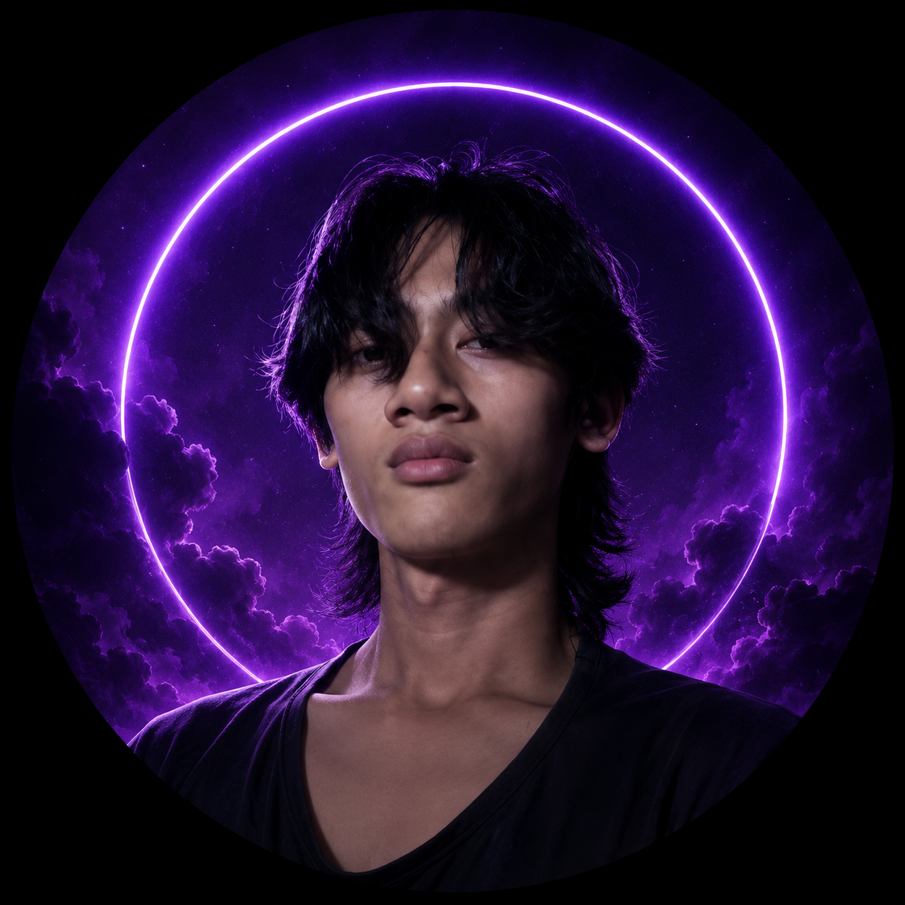
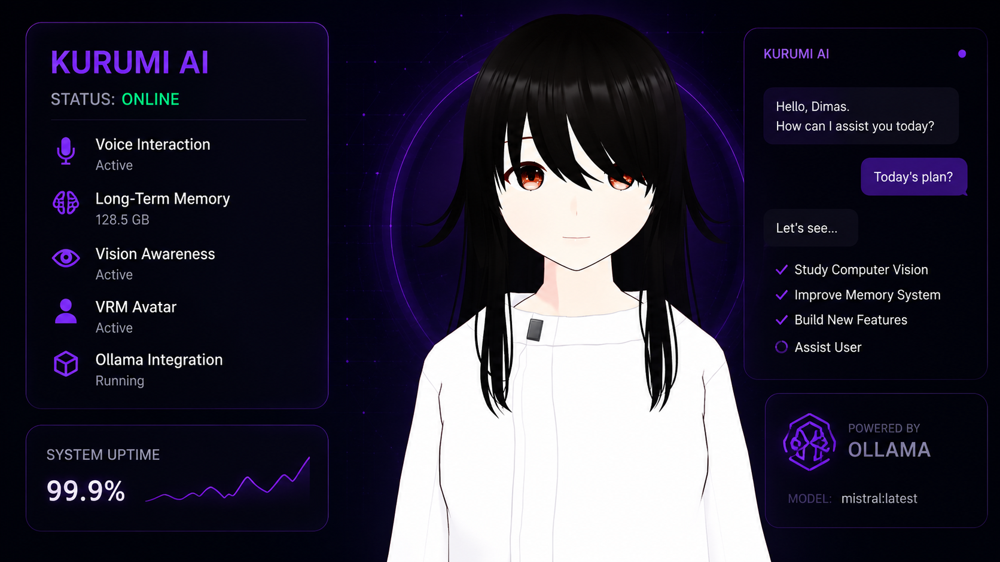

[ SYSTEM ONLINE ] Who I wanted to become? A developer? An engineer? A mechanic? Can I just become all of them? Because my dream isn't just to write software. It's to create an intelligent being that can understand, learn, and interact with the real world. And this is where that journey begins.
View Projects
The flagship build — and the foundation of everything I'm working toward.
Kurumi is a fully offline AI companion that sees, remembers, talks, and plays — built from scratch on a single Ryzen 5 8500G machine, no cloud APIs required. It runs on a local LLM through Ollama, watches the world through a MediaPipe + moondream vision pipeline, and streams live on TikTok and YouTube, reacting to chat in real time.
It's not a finished product — it's a foundation. Every subsystem here (vision, memory, voice, motor-style decision making) is a building block toward a longer goal: a physical humanoid robot, PGR-inspired, with this same AI as its brain.

Short- and long-term memory modules so Kurumi recalls past conversations and context instead of starting fresh every session.
Face mesh, pose, and gesture detection via MediaPipe, plus screen-capture awareness powered by moondream for context on what's happening on-screen.
Real-time TikTok and YouTube chat integration (TikTokLive + pytchat), letting viewers talk to and influence Kurumi live on stream.
Full TTS/STT pipeline running locally with Piper, paired with a VRM avatar for expressive, real-time responses.
A registry-based architecture where new abilities — trading bot, games, future modules — register as plug-in skills rather than hardcoded features.
Tracked down and fixed a deadlock in the Ollama inference lock that was silently freezing responses under concurrent calls.
Resolved webcam index conflicts between the physical camera and a Camo virtual camera so vision and streaming could run side by side.
Iterated on moondream prompt formatting to get reliable, structured scene descriptions instead of inconsistent free text.
Smaller side builds, mostly explored in parallel with Kurumi.
Early OpenCV experiment using hand tracking as mouse input — a first step toward gesture-based control.
An interactive node graph of every module — memory, vision, voice, and skills — and how they connect.